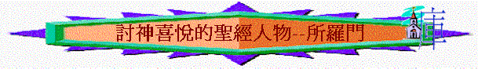

一.所羅門作王
「大衛離開希伯崙之後，在耶路撒冷又立后妃，又生兒女。在耶路撒冷所生的兒子是沙母亞、朔罷、拿單、所羅門、」撒下5:13-14
「所羅門其餘的事，凡他所行的和他的智慧都寫在所羅門記上。所羅門在耶路撒冷作以色列眾人的王共四十年。所羅門與他列祖同睡，葬在他父親大衛的城裏。他兒子羅波安接續他作王。」王上11:41-43
「大衛在耶路撒冷所生的兒子是示米亞、朔罷、拿單、所羅門。這四人是亞米利的女兒拔書亞生的。」代上 3:5
～所羅門是大衛與拔示巴（即拔書亞）所生的兒子，他的名字有和平的及平安的意思，他接續他父親在以色列作王四十年
二.神喜愛他
「大衛安慰他的妻拔示巴，與他同寢，他就生了兒子，給他起名叫所羅門。耶和華也喜愛他，就藉先知拿單賜他一個名字，叫耶底底亞，因為耶和華愛他。」撒下12:24-25
～希伯來文‘chashag’有愛及戀慕的意思，和合本譯「專愛」、「戀愛」、「喜悅」等字眼，而撒下12:24的「耶和華也喜愛他」的喜愛也有愛的意思
～拔示巴原本是烏利亞的妻子，但大衛借亞捫人的刀殺害赫人烏利亞，又娶了他的妻為妻。他藐視神，犯了殺人及姦淫罪
～後來大衛與拔示巴之生了一個兒子名所羅門，他另有一個名字叫「耶底底亞」，意思是「被耶和華所愛」
～從此兒子可看到大衛雖犯罪，但神仍有憐恤，仍愛他的家庭，賜下所羅門給他們
三.神認定他
～希臘文‘eudokeo’有認可、認定、決意、樂意的意思，和合本譯「喜悅」、「喜歡」、「樂意」、「願意」等字。而神喜愛所羅門，也認定他以下的事：
1.認定他作王
「耶和華─你的 神是應當稱頌的！他喜悅你，使你坐以色列的國位；因為他永遠愛以色列，所以立你作王，使你秉公行義。」王上10:9
「耶和華賜我許多兒子，在我兒子中揀選所羅門坐耶和華的國位，治理以色列人。」代上28:5
2.認定他建殿
「耶和華對我說：你兒子所羅門必建造我的殿和院宇；因為我揀選他作我的子，我也必作他的父。」代上28:6
「現在耶和華成就了他所應許的話，使我接續我父大衛坐以色列的國位，是照耶和華所說的，又為耶和華─以色列 神的名建造了殿。」代下6:10
四.討神喜悅—只求智慧
～希伯來文‘yatab’有令人滿意及高興的意思，和合本譯好、為妙、喜悅、喜歡、暢快等字
「在基遍，夜間夢中，耶和華向所羅門顯現，對他說：「你願我賜你什麼？你可以求。」」王上3:5
「所羅門因為求這事，就蒙主喜悅。神對他說：「你既然求這事，不為自己求壽、求富，也不求滅絕你仇敵的性命，單求智慧可以聽訟，」王上3:10-11
～聖經說明他令神歡喜的原因是他在基遍向神求智慧，而從他的呼求，可以人知道以下事情：
1.他掌握屬靈的原則
「所羅門說：「你僕人我父親大衛用誠實、公義、正直的心行在你面前，你就向他大施恩典，又為他存留大恩，賜他一個兒子坐在他的位上，正如今日一樣。」王上3:6
～所羅門清楚若要得神的恩，作為王雖有如大衛的誠實、公義與正直的心，行在神前
～同樣，所羅門作了王後，他如何在民面前有正直與公義，如何能分別是非，判斷百姓的事
2.他認識自己的不能
「耶和華我的神啊，如今你使僕人接續我父親大衛作王；但我是幼童，不知道應當怎樣出入。僕人住在你所揀選的民中，這民多得不可勝數。」王上3:7-8
～所羅門認識自己年幼，未必及大衛有公義有智慧判斷這麼多的百姓
3.他祈求屬天的智慧
「所以求你賜我智慧，可以判斷你的民，能辨別是非。不然，誰能判斷這眾多的民呢？」王上3:9
～所以他祈求神給他智慧判斷神的民，祂這樣的祈求得神喜悅
A.不為自己求
「所羅門因為求這事，就蒙主喜悅。神對他說：「你既然求這事，不為自己求壽、求富，也不求滅絕你仇敵的性命，單求智慧可以聽訟，」王上3:10-11
～若難得有一機會，只要所羅門祈求甚麼，神就應允，但所羅門沒有為自己求壽、求富，求消滅仇敵
B.只為神的事而求
～他所求的是神的事，為求好好管理神的百姓
五.得神悅納---在建殿上
～‘ratsah’ 在希伯來文有滿意、喜愛、悅納的意思，和合本譯「悅納」、「喜悅」、「享受」、「容納」、「喜愛」
1.得悅納的證據
「所羅門祈禱已畢，就有火從天上降下來，燒盡燔祭和別的祭。耶和華的榮光充滿了殿；因耶和華的榮光充滿了耶和華殿，所以祭司不能進殿。」代下7:1-2
「所羅門造成了耶和華殿和王宮；在耶和華殿和王宮凡他心中所要做的，都順順利利地做成了。夜間耶和華向所羅門顯現，對他說：「我已聽了你的禱告，也選擇這地方作為祭祀我的殿宇。」代下7:11-12
「現在我已選擇這殿，分別為聖，使我的名永在其中，我的眼、我的心也必常在那裏。」代下7:16
～而所羅門在建殿上明顯得神悅納，因有以下三樣證據：
A.神的榮光充滿聖殿──代表神願意住在聖殿
B.神的聖火燒盡祭牲──代表神收納人的奉獻
C.神的言語應允垂顧──代表神垂聽王的呼求
2.得神悅納的原因
A.熱心預備
「所羅門定意要為耶和華的名建造殿宇，又為自己的國建造宮室。所羅門就挑選七萬扛抬的，八萬在山上鑿石頭的，三千六百督工的。」代下2:1-2
B.按神旨意
「大衛將殿的遊廊、旁屋、府庫、樓房、內殿，和施恩所的樣式指示他兒子所羅門，又將被靈感動所得的樣式，就是耶和華 神殿的院子、周圍的房屋、殿的府庫，和聖物府庫的一切樣式都指示他；」代上 28:11-12
「大衛說：「這一切工作的樣式都是耶和華用手劃出來使我明白的。」代上 28:19
～殿的樣式是按神指示給大衛的樣式，不是照人的意思
六.得神賜福
「我就應允你所求的，賜你聰明智慧，甚至在你以前沒有像你的，在你以後也沒有像你的。你所沒有求的，我也賜給你，就是富足、尊榮，使你在世的日子，列王中沒有一個能比你的。你若效法你父親大衛，遵行我的道，謹守我的律例、誡命，我必使你長壽。」」王上3:12-14
～和合本有時將「喜悅」(ratsah)譯為施恩，事實上神也會將恩典、拯救，福氣臨到祂所喜悅的人，所羅門行祂所喜悅的事，神也將福氣臨到他
1.無人能比的智慧
2.無王能比的富足
3.無王能比的尊榮
4.有條件下的長壽(要遵行神的道)
七.惹神發怒
「耶和華向所羅門發怒，因為他的心偏離向他兩次顯現的耶和華以色列的神。」王上11:9
「所羅門有妃七百，都是公主；還有嬪三百。這些妃嬪誘惑他的心。所羅門年老的時候，他的妃嬪誘惑他的心去隨從別神，不效法他父親大衛誠誠實實地順服耶和華他的神。」王上11:3-4
～討神喜悅的相反是惹神發怒，所羅門雖行了很多神喜悅的事，但他後期卻行神看為不喜悅的神──隨從別神，而他不專心跟從神的事，也反映以下事情：
1.有神的賜福卻不滿足
「所羅門王在法老的女兒之外，又寵愛許多外邦女子，就是摩押女子、亞捫女子、以東女子、西頓女子、赫人女子。」王上11:1
「只是王不可為自己加添馬匹，也不可使百姓回埃及去，為要加添他的馬匹，因耶和華曾吩咐你們說：『不可再回那條路去。』他也不可為自己多立妃嬪，恐怕他的心偏邪；也不可為自己多積金銀。」申17:16-17
～申命記已早吩咐作王的不可為自己多立或多增一些事情，但所羅門得神賜福後，有法老的女兒為妻，仍不滿足，仍多娶外族女子
2.有神的警戒卻不儆醒
「論到這些國的人，耶和華曾曉諭以色列人說：「你們不可與他們往來相通，因為他們必誘惑你們的心去隨從他們的神。」所羅門卻戀愛這些女子。」王上11:2
～神曾曉喻及警戒以色列人不可與外邦女子往來，免得他們的心被引誘，但所羅門卻沒有理會，不儆醒神的囑咐
3.有神的智慧仍投網羅
～他有屬天的智慧，應知道外邦女子能引誘他隨從別神，但很可惜，他仍自投網羅，被她們挾制
4.有超越表現仍被引誘
「我又說：「以色列王所羅門不是在這樣的事上犯罪嗎？在多國中並沒有一王像他，且蒙他神所愛，神立他作以色列全國的王；然而連他也被外邦女子引誘犯罪。」尼13:26
～世上沒有王像所羅門有超越的表現及智慧，但連他也受不了引誘，跟妃嬪敬拜事奉外幫的神，更何況我們呢？
5.有愛神之心卻不恆久
「所羅門愛耶和華，遵行他父親大衛的律例，只是還在邱壇獻祭燒香。」王上3:3
「所羅門有妃七百，都是公主；還有嬪三百。這些妃嬪誘惑他的心。所羅門年老的時候，他的妃嬪誘惑他的心去隨從別神，不效法他父親大衛誠誠實實地順服耶和華他的神。」王上11:3-4
～所羅門曾經愛耶和華，但到年老，他的心卻偏離，他愛神的心至終不長久
～而妃原來作妻子，用來稱呼君主之正室，嬪就是古代皇帝侍妾
6.有父的榜樣卻不效法
～大衛過往是「誠誠實實」的順服神(原文作向神的心是純全)，他對神的心沒有偏差及含雜質，但所羅門卻沒有效法大衛，除神以外，也有別的
7.有敬神表現卻不專一
「因為所羅門隨從西頓人的女神亞斯他錄和亞捫人可憎的神米勒公。所羅門行耶和華眼中看為惡的事，不效法他父親大衛專心順從耶和華。所羅門為摩押可憎的神基抹和亞捫人可憎的神摩洛，在耶路撒冷對面的山上建築邱壇。」王上11:5-7
～「亞斯他錄」是迦南人所敬奉的假神，是巴力的妹妹，掌繁殖與爭戰的女神
～「米勒公」與摩洛相同，有學者相信基抺也指同一神祇
～所羅門為此等神選邱壇，而「耶路撒冷對面的山」應指橄欖山
～所羅門曾經向真神獻祭多不勝數，但他對神卻不專心，又敬拜真神，又祭祠偶像
8.有屬靈經歷仍不珍惜
「耶和華向所羅門發怒，因為他的心偏離向他兩次顯現的耶和華以色列的神。」王上11:9
～不是所有人有所門羅如此經歷—神向他顯現2次，但他有此獨特經歷卻不珍惜，仍然偏離神
9.蒙真神所愛卻偏離神
「我又說：「以色列王所羅門不是在這樣的事上犯罪嗎？在多國中並沒有一王像他，且蒙他神所愛，神立他作以色列全國的王；然而連他也被外邦女子引誘犯罪。」尼13:26
～他是蒙神所愛，仍偏離愛他的神
10.有神的吩咐卻不遵守
「耶和華曾吩咐他不可隨從別神，他卻沒有遵守耶和華所吩咐的。」王上11:10
～神曾與所羅門立約，但他卻沒有遵守，敬拜別神
「所以耶和華對他說：「你既行了這事，不遵守我所吩咐你守的約和律例，我必將你的國奪回，賜給你的臣子。然而，因你父親大衛的緣故，我不在你活著的日子行這事，必從你兒子的手中將國奪回。只是我不將全國奪回，要因我僕人大衛和我所選擇的耶路撒冷，還留一支派給你的兒子。」」王上11:11-13
～至終神要將所羅門的國奪回，但因大衛原故，所以還留一支派